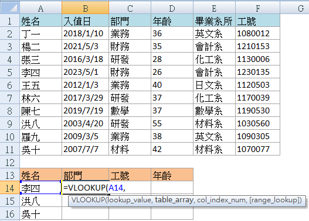
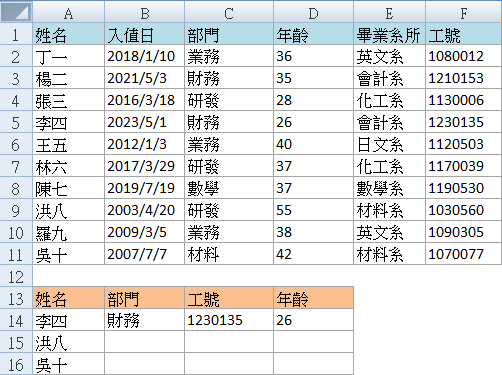

豪拜兒|Excel VLOOKUP 函數詳細教學：從基礎到進階應用

Excel 中的 VLOOKUP 函數是一個非常實用的工具，用於在範圍內進行"垂直方向"的查找並返回相應的數值。無論是在日常工作中處理大規模數據，還是在分析資料時需要快速定位特定信息，VLOOKUP 都能提供極大的幫助。本文將詳細介紹 VLOOKUP 函數的基本語法和使用方法，並通過實例說明如何在工作中應用此函數。
VLOOKUP 函數簡介
VLOOKUP（Vertical Lookup）是 Excel 中用於在數據表中按列查找值的函數。其基本語法如下：
VLOOKUP(lookup_value, table_array, col_index_num, [range_lookup])
- lookup_value：要查找的目標值。
- table_array：包含查找數據的範圍。
- col_index_num：目標值所在的列索引號。
- range_lookup：指定查找方式，FALSE 表示精確匹配，另一個標示方法為0，TRUE 或省略表示近似匹配，可以標示為1。
VLOOKUP 的基本應用範例：查找員工資料
以下是通過具體例子說明如何在 Excel 中使用 VLOOKUP 函數，假設老闆需要我們從公司上百人的員工資料中，挑出少數人的部門、工號和年齡資訊。這時我們可以使用 VLOOKUP 函數來實現。
操作步驟
設置查找範圍
假設我們有以下員工資料表（上方藍色表單），我們需要將資料查找到另一張表單（下方杏色表單）中：
在 B14 儲存格輸入公式
在 B14 儲存格中輸入公式：
=VLOOKUP(A14, $A$1:$F$11, 3, 0)
其中，A14 是我們查找的目標，$A$1:$F$11 是藍色表格的範圍，3 表示在第三欄（部門）進行垂直查找，0 表示精確匹配。
- A14 是我們查找的目標

- $A$1:$F$11 是藍色表格的範圍
- 3 表示在第三欄（部門）進行垂直查找

- 0 表示精確匹配
按下 Enter 鍵，然後拖曳 B14 儲存格右下角的填充柄，將公式複製到 C14 和 D14 儲存格。這樣就能自動填充工號和年齡資訊。
VLOOKUP 的進階應用範例：在 VLOOKUP 中加入數組公式
在 Excel 中，使用數組公式來應用 VLOOKUP 函數，可以同時查找多個列的數值，這樣可以避免多次輸入和複製公式的麻煩。
數組公式（Array Formula）是一種特殊的公式類型，它可以在多個儲存格中同時進行計算。在使用 VLOOKUP 函數進行多列查找時，數組公式非常有用。
承接上述文章的例子，在上述文章我們已經完成了第一欄"部門"資料的查找，但對於"工號"、“年齡”，我們不想再重新輸入公式，那麼該怎麼做呢?
操作步驟
設置範圍
框選你的資料表和目標表設置如下：
在 B14 儲存格輸入公式
=VLOOKUP(A14, $A$1:$F$11, {3, 4, 5}, 0)
- A14 是我們查找的目標。
- $A$1:$F$11 是藍色表格的範圍。
- {3, 6, 4} 是數組，表示在第三、第六和第四列中查找目標值。
- 0 表示精確匹配。
按下 Ctrl + Shift + Enter 鍵
不要只按 Enter 鍵，而是按 Ctrl + Shift + Enter 鍵，這樣 Excel 會將你的公式作為數組公式來處理。
當你按下 Ctrl + Shift + Enter 鍵後，Excel 會自動在 B14、C14 和 D14 中填入相應的部門、工號和年齡資訊。如果你只按 Enter 鍵，Excel 只會在 B14 中輸出結果，無法填入其他儲存格。
這樣，李四的資料會一次性填寫完成。

向下填充
接著你可以將這三個儲存格向下拖曳，自動填充其他員工的相關資料。
為什麼需要學習 Excel？難道不可以依賴 AI 工具嗎？
過去，學習 Excel 不僅能提升數據處理和分析能力，還能顯著提高工作效率。掌握各種 Excel 公式和 VBA 技巧，可以有效提升工作效率，通過自動化功能減少重複性工作。此外，熟練掌握 Excel 也能增加就業競爭力，因為許多職位，尤其是在財務、數據分析和行政等領域，都將其視為基本要求。
隨著 AI 技術的問世，與 AI 工具合作的情況下，我們可能不再需要從零開始編寫公式或 VBA 程式。例如，免費版的 ChatGPT-3.5 能生成和解釋 Excel 中的常見公式，如 SUM、VLOOKUP、IF 等，並幫助解決基本的數據處理問題。付費版的 ChatGPT-4.0 在公式生成和解釋方面同樣出色，能更好地處理複雜的公式和多步驟的數據分析任務，並提供更精確的幫助，還能協助生成各類型的圖表。
然而，對於 Excel 完全不熟悉的人，仍然難以與 AI 有效溝通並驗證結果。因此，小編認為，為了更好地與 AI 協作，對 Excel 的基本了解仍然是必要的。建議可以參考以下Hahow學習資源：
為什麼選擇 Hahow 線上課程平台？
Hahow 是一個受歡迎的線上課程平台，提供各種專業課程。選擇 Hahow，可以享受靈活的學習方式，隨時隨地都可以學習，非常適合忙碌的工作人士。平台上的課程由專業講師授課，內容豐富且實用。還可以與其他學員交流學習心得，共同進步。相比坊間動輒上萬元的課程，Hahow 的線上課程不僅省去交通的舟車勞頓，更有價格實惠的絕對優勢。
更多文章
想要更深入了解Excel的習性和如何照顧牠們嗎？請點擊以下連結閱讀更多相關文章。點我前往更多文章